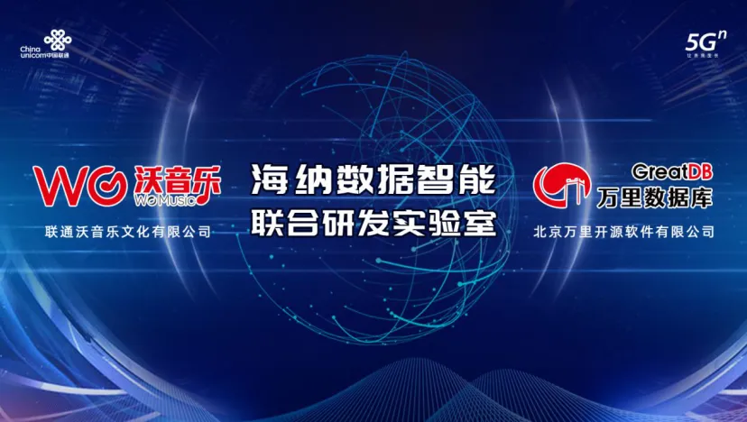

万里数据库与联通在线沃音乐携手 共建海纳数据智能联合研发实验室
海纳数据智能联合研发实验室
1月21日，北京万里开源软件有限公司与联通沃音乐文化有限公司联合打造的“海纳数据智能联合研发实验室”正式举行云揭牌仪式，双方将致力于国产数据库核心技术研究和数据智能解决方案开发，开拓数据技术服务市场，引领国产数据库行业发展。

强强联手共创数据智能实验室
引领国产数据库行业创新发展
在数字化转型浪潮下，大数据逐渐向智能化发展，如何充分发挥大数据效能成为业内亟需解决的问题。万里数据库与联通在线沃音乐联合成立海纳数据智能联合研发实验室，将努力打造最好用的国产数据库，以及最适合业务生产的数据智能产品体系，成为国产数据库行业的创新引领者。
联通在线沃音乐拥有10余年的数据沉淀经验，曾推出“5Gⁿ新文创平台”，发布的“5G数据智能 数据技术解决方案”为政企客户提供全流程场景数据技术服务，为建立实验室打下良好基础。
联通在线沃音乐总经理李韩表示，“沃音乐长期坚持自主集成、重视自主知识产权和核心技术的研发，目前已形成ABCDE平台化新文创产品体系。沃音乐将携手万里数据库，联合建立海纳数据智能联合研发实验室，把万里数据库技术融合沃音乐的AI、视频和安全技术，打造最适合业务生产的数据智能产品体系，共同开拓市场。”
万里数据库是北京万里开源软件有限公司自主研发的新一代分布式数据库，经过10余年的应用验证，在功能、性能、稳定性、易用性等方面均处于行业领先水平，历经500多个业务场景的锤炼，已广泛应用于金融、能源、通信、政府、交通等多个行业。
北京万里开源软件有限公司总经理郑红云表示：“数据库是国产化产业中的核心一环，本次成立研发实验室，是增强国产数据库产业链、供应链自主可控能力的一次重要实践，万里数据库将与联通在线沃音乐共同打造世界一流的数据库产品。”
打造一站式服务数据智能产品体系
为千行百业数字化转型赋能
国产数据库核心技术研发并非易事，为了有效开展研发工作，万里数据库总经理郑红云与联通在线沃音乐总经理李韩共同担任实验室主任，主持实验室全面工作，并提出打磨产品、培养团队、解决方案到开拓市场的清晰发展路径，打造一套从底层数据库到上层数据应用的综合一站式服务数据智能产品体系——海纳uniBase。
海纳uniBase以海纳数据库为底层支撑，通过大数据仓库、实时计算平台进行高效数据管理，最终形成数据建模、效果监测等上层数据应用，为企业数字化转型赋能。此外，双方还透露出云数据库、数据库一体机、智能运维三大未来研究方向，进一步为国产数据库产业发展做出贡献。
掌握核心技术是实现国产数据库产业长足发展的根本动力，本次万里数据库与联通在线沃音乐携手，将为国产数据库核心技术研究带来创新突破，为政府、企业信息化建设提供数据智能服务解决方案，以数据库产业发展带动全行业数字化转型，全面赋能中国经济社会发展。
推荐阅读1. 老鱼笔记 | 万里数据库是一家怎样的公司？
2. 3分钟了解万里数据库的20203. 万里数据库GreatDB再度发力，荣获“金鼎奖”4. 万里数据库与联通沃音乐完成“云签约”，共建5G数据智能技术服务平台
5. 万里开源中标中移动OLTP数据库联合创新项目
万里数据库简介
万里数据库是北京万里开源软件有限公司自主研发的新一代分布式数据库，经过10余年的应用验证，在功能、性能、稳定性、易用性等方面均处于行业领先水平，历经500多个业务场景的锤炼，已广泛应用于金融、能源、通信、政府、交通等多个行业。


扫码二维码
关注公众号